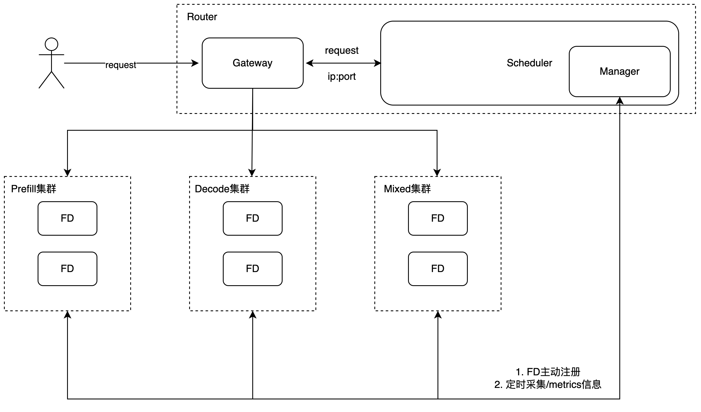

Load-Balancing Scheduling Router
FastDeploy provides a Golang-based Router for request scheduling. The Router supports both centralized deployment and Prefill/Decode (PD) disaggregated deployment.。

Installation
1. Python Command Line (Recommended)
The fd-router binary is bundled directly in the FastDeploy Python wheel package. After installing FastDeploy, you can launch the Router via the Python command line without any additional download or compilation:
# Start in mixed mode
python -m fastdeploy.golang_router.launch --port 9000
# Start in PD disaggregated mode
python -m fastdeploy.golang_router.launch --port 9000 --splitwise
# Start with a config file
python -m fastdeploy.golang_router.launch --config_path config.yaml
# Print version
python -m fastdeploy.golang_router.launch --version
2. Prebuilt Binary Download (Optional)
If you need to run the Router binary directly (e.g., without the Python environment), you can download the prebuilt binary:
wget https://paddle-qa.bj.bcebos.com/paddle-pipeline/FastDeploy_ActionCE/develop/latest/fd-router
chmod +x fd-router
mv fd-router /usr/local/bin/fd-router
Starting from FastDeploy v2.5.0, the official Docker images also include the precompiled Router binary at /usr/local/bin/fd-router. For installation details, please refer to the FastDeploy Installation Guide
3. Build from Source
You need to build the Router from source in the following scenarios:
- Custom modifications to the Router are required
- The platform is not covered by the prebuilt binary
Environment Requirements:
- Go >= 1.21
Clone the FastDeploy repository and build the Router:
git clone https://github.com/PaddlePaddle/FastDeploy.git
cd FastDeploy/fastdeploy/golang_router
bash build.sh
Centralized Deployment
Start the Router service. The --port parameter specifies the scheduling port for centralized deployment.
python -m fastdeploy.golang_router.launch --port 30000
Start a mixed inference instance. Compared to standalone deployment, specify the Router endpoint via --router. Other parameters remain unchanged.
export CUDA_VISIBLE_DEVICES=0
export FD_LOG_DIR="log_mixed"
python -m fastdeploy.entrypoints.openai.api_server \
--model "PaddlePaddle/ERNIE-4.5-0.3B-Paddle" \
--port 31000 \
--router "0.0.0.0:30000"
PD Disaggregated Deployment
Start the Router service with PD disaggregation enabled using the --splitwise flag.
python -m fastdeploy.golang_router.launch \
--port 30000 \
--splitwise
Launch a prefill instance. Compared with standalone deployment, add the --splitwise-role parameter to specify the instance role as Prefill, and add the --router parameter to specify the Router endpoint. All other parameters remain the same as in standalone deployment.
export CUDA_VISIBLE_DEVICES=0
export FD_LOG_DIR="log_prefill"
python -m fastdeploy.entrypoints.openai.api_server \
--model "PaddlePaddle/ERNIE-4.5-0.3B-Paddle" \
--port 31000 \
--splitwise-role prefill \
--router "0.0.0.0:30000"
Launch a decode instance.
export CUDA_VISIBLE_DEVICES=1
export FD_LOG_DIR="log_decode"
python -m fastdeploy.entrypoints.openai.api_server \
--model "PaddlePaddle/ERNIE-4.5-0.3B-Paddle" \
--port 32000 \
--splitwise-role decode \
--router "0.0.0.0:30000"
Once both Prefill and Decode instances are successfully launched and registered with the Router, requests can be sent:
curl -X POST "http://0.0.0.0:30000/v1/chat/completions" \
-H "Content-Type: application/json" \
-d '{
"messages": [
{"role": "user", "content": "hello"}
],
"max_tokens": 100,
"stream": false
}'
For more details on PD disaggregated deployment, please refer to the Usage Guide
CacheAware
The Load-Balancing Scheduling Router supports the CacheAware strategy, mainly applied to PD separation deployment to optimize request allocation and improve cache hit rate.
To use the CacheAware strategy, default configurations need to be modified. You can copy the configuration template and make adjustments (an example is available at Router directory under examples/run_with_config):
pushd examples/run_with_config
cp config/config.example.yaml config/config.yaml
popd
Launch the Router with the custom configuration specified via --config_path:
python -m fastdeploy.golang_router.launch \
--port 30000 \
--splitwise \
--config_path examples/run_with_config/config/config.yaml
Prefill and Decode instance startup are the same as PD disaggregated deployment.
Launch the prefill instance.
export CUDA_VISIBLE_DEVICES=0
export FD_LOG_DIR="log_prefill"
python -m fastdeploy.entrypoints.openai.api_server \
--model "PaddlePaddle/ERNIE-4.5-0.3B-Paddle" \
--port 31000 \
--splitwise-role prefill \
--router "0.0.0.0:30000"
Launch the decode instance.
export CUDA_VISIBLE_DEVICES=1
export FD_LOG_DIR="log_decode"
python -m fastdeploy.entrypoints.openai.api_server \
--model "PaddlePaddle/ERNIE-4.5-0.3B-Paddle" \
--port 32000 \
--splitwise-role decode \
--router "0.0.0.0:30000"
HTTP Service Description
The Router exposes a set of HTTP services to provide unified request scheduling, runtime health checking, and monitoring metrics, facilitating integration and operations.
| Method | Path | Description |
|---|---|---|
| POST | /v1/chat/completions |
Provide scheduling services for inference requests based on the Chat Completions API |
| POST | /v1/completions |
Provide scheduling services for general text completion inference requests |
| POST | /v1/abort_requests |
Abort inference requests to release GPU memory and compute resources. Accepts req_ids or abort_all=true. Returns aborted requests with their generated token counts |
| POST | /register |
Allow inference instances to register their metadata with the Router for scheduling |
| GET | /registered |
Query the list of currently registered inference instances |
| GET | /registered_number |
Query the number of currently registered inference instances |
| GET | /health_generate |
Check the health status of registered Prefill / Decode inference instances |
| GET | /metrics |
Provide Prometheus-formatted Router runtime metrics for monitoring and observability |
Deployment Parameters
Router Startup Parameters
- --port: Specify the Router scheduling port.
- --splitwise: Enable PD disaggregated scheduling mode.
- --config_path: Specify the Router configuration file path for loading custom scheduling and runtime parameters.
Configuration File Preparation
Before using --config_path, prepare a configuration file that conforms to the Router specification.
The configuration file is typically written in YAML format. For detailed parameters, refer to Configuration Parameters。You may copy and modify the configuration template (example available at examples/run_with_config)：
cp config/config.example.yaml config/config.yaml
The Load-Balancing Scheduling Router also supports registering inference instances through configuration files at startup (example available at examples/run_with_default_workers):
cp config/config.example.yaml config/config.yaml
cp config/register.example.yaml config/register.yaml
Configuration Parameters
config.yaml example:
server:
port: "8080" # Listening port
host: "0.0.0.0" # Listening address
mode: "debug" # Startup mode: debug, release, test
splitwise: true # true enables PD disaggregation; false disables it
scheduler:
policy: "power_of_two" # Scheduling policy (optional): random, power_of_two, round_robin, process_tokens, request_num, cache_aware, remote_cache_aware, fd_metrics_score, fd_remote_metrics_score
prefill-policy: "cache_aware" # Prefill scheduling policy in PD mode
decode-policy: "request_num" # Decode scheduling policy in PD mode
eviction-interval-secs: 60 # Cache eviction interval for CacheAware scheduling
eviction-duration-mins: 30 # Eviction duration for cache-aware radix tree nodes (minutes); default: 30
balance-abs-threshold: 1 # Absolute threshold for CacheAware balancing
balance-rel-threshold: 0.2 # Relative threshold for CacheAware balancing
hit-ratio-weight: 1.0 # Cache hit ratio weight
load-balance-weight: 0.05 # Load balancing weight
cache-block-size: 4 # Cache block size
# tokenizer-url: "http://0.0.0.0:8098" # Tokenizer service endpoint (optional), cache_aware uses character-level tokenization when not configured.
# Note: Enabling this option causes a synchronous remote tokenizer call on every scheduling decision,
# introducing additional network latency. Only enable it when precise token-level tokenization
# is needed to improve cache hit rate.
# tokenizer-timeout-secs: 2 # Tokenizer service timeout; default: 2
waiting-weight: 10 # Waiting weight for CacheAware scheduling
stats-interval-secs: 5 # Stats logging interval in seconds, includes load and cache hit rate statistics; default: 5
manager:
health-failure-threshold: 3 # Number of failed health checks before marking unhealthy
health-success-threshold: 2 # Number of successful health checks before marking healthy
health-check-timeout-secs: 5 # Health check timeout
health-check-interval-secs: 5 # Health check interval
health-check-endpoint: /health # Health check endpoint
register-path: "config/register.yaml" # Path to instance registration config (optional)
log:
level: "info" # Log level: debug / info / warn / error
output: "file" # Log output: stdout / file
register.yaml example：
instances:
- role: "prefill"
host_ip: 127.0.0.1
port: 8097
connector_port: 8001
engine_worker_queue_port: 8002
transfer_protocol:
- ipc
- rdma
rdma_ports: [7100, "7101"]
device_ids: [0, "1"]
metrics_port: 8003
- role: "decode"
host_ip: 127.0.0.1
port: 8098
connector_port: 8001
engine_worker_queue_port: 8002
transfer_protocol: ["ipc","rdma"]
rdma_ports: ["7100", "7101"]
device_ids: ["0", "1"]
Instance Registration Parameters：
- role: Instance role, one of: decode, prefill, mixed.
- host_ip: IP address of the inference instance host.
- port: Service port of the inference instance.
- connector_port: Connector port used for PD communication.
- engine_worker_queue_port: Shared queue communication port within the inference instance.
- transfer_protocol: Specify KV Cache transfer protocol, optional values: ipc / rdma, multiple protocols separated by commas
- rdma_ports: Specify RDMA communication ports, multiple ports separated by commas (only takes effect when transfer_protocol contains rdma)
- device_ids: GPU device IDs of the inference instance, multiple IDs separated by commas
- metrics_port: Port number of the inference instance's metrics
Among these, role, host_ip, and port are required; all other parameters are optional.
Scheduling Strategies
The Router supports the following scheduling strategies, configurable via policy (mixed mode), prefill-policy, and decode-policy (PD disaggregated mode) fields in the configuration file.
Default strategies: When not configured, prefill nodes default to process_tokens, mixed and decode nodes default to request_num.
| Strategy | Applicable Scenario | Implementation |
|---|---|---|
random |
General | Randomly selects one available instance, stateless, suitable for lightweight scenarios. |
round_robin |
General | Uses atomic counter to cycle through instance list, distributing requests evenly in order. |
power_of_two |
General | Randomly picks two instances, compares their concurrent request counts, selects the one with lower load. |
process_tokens |
prefill (default) | Iterates all instances, selects the one with the fewest tokens currently being processed (in-memory counting), suitable for prefill long-request load balancing. |
request_num |
mixed / decode (default) | Iterates all instances, selects the one with the fewest concurrent requests (in-memory counting), suitable for decode and mixed scenarios. |
fd_metrics_score |
mixed / decode | Uses in-memory counting to get running/waiting request counts, scores by running + waiting × waitingWeight, selects the instance with the lowest score. |
fd_remote_metrics_score |
mixed / decode | Fetches running/waiting request counts from each instance's remote /metrics endpoint in real-time, scores by running + waiting × waitingWeight, selects the instance with the lowest score. Requires metrics_port in instance registration. Note: A synchronous remote HTTP request is issued on every scheduling decision. With a large number of instances or poor network conditions, this can significantly increase scheduling latency. Evaluate your deployment conditions carefully before enabling this strategy. |
cache_aware |
prefill | Maintains KV Cache prefix hit information per instance via Radix Tree, selects instances by combining hit ratio and load scores (in-memory counting); automatically falls back to process_tokens when load is severely imbalanced. |
remote_cache_aware |
prefill | Same cache-aware strategy as cache_aware, but uses remote /metrics endpoint for instance load data. Requires metrics_port in instance registration. Note: A synchronous remote HTTP request is issued on every scheduling decision. With a large number of instances or poor network conditions, this can significantly increase scheduling latency. Evaluate your deployment conditions carefully before enabling this strategy. |
Troubleshooting
If you encounter issues while using the Router, please refer to the Router Troubleshooting Guide, which covers common log analysis, response output interpretation, and troubleshooting methods.